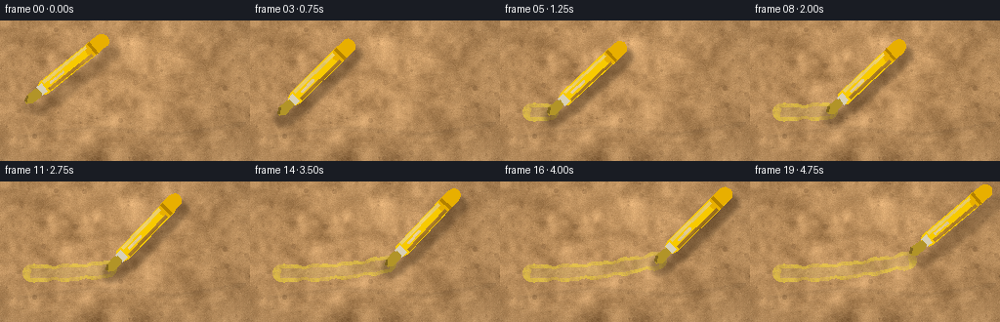
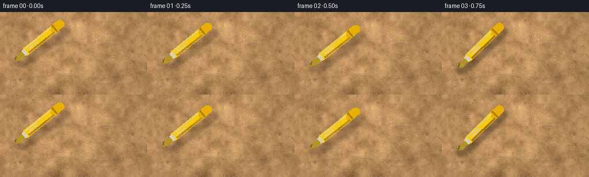

CODING AGENTS AS PIXEL WORLD MODELS
traex/Seed-2.1-Pro-0915 · phygen_034
点击播放 · 原生 RGB 像素
此结果可播放，但该运行尚未通过最终提交审核。页面展示不代表评测通过。
逐轮保存的候选
回放视频、检查图与代码变化。
每份候选均可单独播放。实际图片检查记录在下方工具轨迹中。
候选 01播放与检查图
点击播放 · 原生 RGB 像素


展开代码变化
--- 上一保存版本
+++ 本次保存版本
@@ -0,0 +1,281 @@
+"""Procedural t2v generator: yellow highlighter marking rough cardboard.
+
+Renders 20 RGB frames (256x144 @ 4fps) using only numpy + PIL:
+ * multi-scale procedural kraft-cardboard texture with fibers and specks
+ * a translucent, slightly irregular yellow ink ribbon that grows over time
+ * a chisel-tip yellow highlighter with shading, contact shadow and motion
+"""
+import math
+from pathlib import Path
+
+import numpy as np
+from PIL import Image, ImageDraw, ImageFilter
+
+import artifact_io
+
+W, H, N, FPS = 256, 144, 20, 4.0
+CASE_DIR = Path(__file__).resolve().parent
+
+rng = np.random.default_rng(20261111)
+
+
+# --------------------------------------------------------------------------
+# Cardboard surface
+# --------------------------------------------------------------------------
+def make_cardboard():
+ base = np.array([181.0, 138.0, 90.0])
+ img = np.zeros((H, W, 3), dtype=np.float64)
+ img[:] = base
+
+ # Multi-scale cloudy tone variation.
+ noise = np.zeros((H, W), dtype=np.float64)
+ for (gh, gw), amp in [((9, 16), 13.0), ((18, 32), 8.0), ((36, 64), 5.0)]:
+ grid = rng.normal(0.0, 1.0, (gh, gw)).astype(np.float32)
+ up = np.array(Image.fromarray(grid).resize((W, H), Image.BILINEAR))
+ noise += up * amp
+ noise /= max(noise.std(), 1e-6)
+ img += noise[..., None] * np.array([11.0, 9.5, 7.5])
+
+ # Fine per-pixel grain.
+ fine = rng.normal(0.0, 1.0, (H, W))
+ img += fine[..., None] * np.array([4.5, 4.0, 3.5])
+
+ canvas = Image.fromarray(np.clip(img, 0, 255).astype(np.uint8), "RGB")
+ draw = ImageDraw.Draw(canvas, "RGBA")
+
+ # Paper fibers: short thin streaks, mostly horizontal.
+ for _ in range(300):
+ x = rng.uniform(-10, W)
+ y = rng.uniform(0, H)
+ length = rng.uniform(3, 18)
+ ang = rng.normal(0.0, 0.35)
+ x2, y2 = x + length * math.cos(ang), y + length * math.sin(ang)
+ if rng.random() < 0.55:
+ col = (118, 84, 48, int(rng.uniform(18, 40)))
+ else:
+ col = (222, 188, 138, int(rng.uniform(14, 32)))
+ draw.line([(x, y), (x2, y2)], fill=col, width=1)
+
+ # Dark specks and occasional longer flecks.
+ for _ in range(90):
+ x, y = rng.uniform(0, W), rng.uniform(0, H)
+ r = rng.choice([1, 1, 1, 2])
+ draw.ellipse([x - r, y - r, x + r, y + r],
+ fill=(92, 62, 34, int(rng.uniform(25, 60))))
+
+ # One faint crease / wrinkle for surface character.
+ crease = Image.new("RGBA", (W, H), (0, 0, 0, 0))
+ cd = ImageDraw.Draw(crease)
+ cd.line([(18, 118), (96, 108), (176, 116), (250, 104)],
+ fill=(86, 58, 30, 55), width=2)
+ cd.line([(18, 121), (96, 111), (176, 119), (250, 107)],
+ fill=(225, 192, 142, 35), width=1)
+ crease = crease.filter(ImageFilter.GaussianBlur(1.1))
+ canvas = Image.alpha_composite(canvas.convert("RGBA"), crease)
+
+ arr = np.array(canvas.convert("RGB"), dtype=np.float64)
+
+ # Soft directional light from the upper-left plus gentle vignette.
+ yy, xx = np.mgrid[0:H, 0:W]
+ light = 1.0 + 0.10 * (1.0 - (xx / W + yy / H) / 2.0)
+ rx, ry = xx / W - 0.5, yy / H - 0.5
+ vignette = 1.0 - 0.22 * (rx * rx + ry * ry)
+ arr *= (light * vignette)[..., None]
+
+ # Static fine grain reused by every frame (no temporal flicker).
+ grain = rng.normal(0.0, 3.0, (H, W, 1))
+ arr += grain
+ return np.clip(arr, 0, 255).astype(np.uint8)
+
+
+# Static noise field used to give the ink a dry, uneven look.
+ink_noise = np.zeros((H, W), dtype=np.float64)
+for (gh, gw), amp in [((18, 32), 0.16), ((72, 128), 0.10), ((H, W), 0.06)]:
+ grid = rng.normal(0.0, 1.0, (gh, gw)).astype(np.float32)
+ ink_noise += np.array(Image.fromarray(grid).resize(
+ (W, H), Image.BILINEAR)) * amp
+ink_noise /= max(ink_noise.std(), 1e-6)
+
+
+# --------------------------------------------------------------------------
+# Highlight stroke path
+# --------------------------------------------------------------------------
+def path_point(s):
+ """Center of the drawn line at progress s in [0, 1]."""
+ x = 32.0 + 130.0 * s
+ y = 94.0 - 12.0 * s + 3.5 * math.sin(s * math.pi * 1.1)
+ return np.array([x, y])
+
+
+def stroke_width(s):
+ # Deterministic hand-drawn width wobble (pure function of s -> no flicker).
+ return 8.0 + 1.0 * math.sin(27.0 * s) + 0.6 * math.sin(53.0 * s + 1.0)
+
+
+def make_stroke_layer(s_end):
+ layer = Image.new("RGBA", (W, H), (0, 0, 0, 0))
+ if s_end <= 0:
+ return layer
+ draw = ImageDraw.Draw(layer)
+ n = max(10, int(s_end * 200))
+ ss = np.linspace(0.0, s_end, n)
+ pts = np.array([path_point(s) for s in ss])
+ diff = np.gradient(pts, axis=0)
+ norm = np.linalg.norm(diff, axis=1, keepdims=True)
+ norm[norm == 0] = 1.0
+ tang = diff / norm
+ perp = np.stack([-tang[:, 1], tang[:, 0]], axis=1)
+ widths = np.array([stroke_width(s) for s in ss])
+
+ left = pts + perp * widths[:, None]
+ right = pts - perp * widths[:, None]
+ ribbon = [tuple(p) for p in left] + [tuple(p) for p in right[::-1]]
+ draw.polygon(ribbon, fill=(250, 224, 55, 138))
+ # Rounded caps so the ink ends read naturally.
+ for p, w in ((pts[0], widths[0]), (pts[-1], widths[-1])):
+ draw.ellipse([p[0] - w, p[1] - w, p[0] + w, p[1] + w],
+ fill=(250, 224, 55, 138))
+
+ # Narrower, brighter inner pass for a little ink depth.
+ wi = widths * 0.55
+ left_i = pts + perp * wi[:, None]
+ right_i = pts - perp * wi[:, None]
+ draw.polygon([tuple(p) for p in left_i] +
+ [tuple(p) for p in right_i[::-1]],
+ fill=(255, 238, 110, 46))
+
+ # Modulate alpha with static grain -> dry, translucent highlighter look.
+ arr = np.array(layer, dtype=np.float64)
+ alpha = arr[..., 3] / 255.0
+ alpha *= np.clip(0.84 + 0.28 * ink_noise, 0.55, 1.0)
+ arr[..., 3] = alpha * 255.0
+ return Image.fromarray(np.clip(arr, 0, 255).astype(np.uint8), "RGBA")
+
+
+# --------------------------------------------------------------------------
+# Highlighter pen (built in local coordinates, tip at origin, body along +x)
+# --------------------------------------------------------------------------
+def capsule(x0, x1, r, steps=9):
+ pts = [(x0, -r), (x1, -r)]
+ for k in range(steps + 1):
+ a = -math.pi / 2 + math.pi * k / steps
+ pts.append((x1 + r * math.cos(a), r * math.sin(a)))
+ pts.append((x0, r))
+ for k in range(steps + 1):
+ a = math.pi / 2 + math.pi * k / steps
+ pts.append((x0 + r * math.cos(a), r * math.sin(a)))
+ return pts
+
+
+def circle_pts(cx, cy, r, steps=12):
+ return [(cx + r * math.cos(2 * math.pi * k / steps),
+ cy + r * math.sin(2 * math.pi * k / steps)) for k in range(steps)]
+
+
+def local_pen_polygons():
+ """Return (shadow_polys, colored (poly, fill)) in pen-local coordinates."""
+ felt = [(-3.0, -1.5), (1.5, -5.0), (12.0, -4.6), (15.0, -2.8),
+ (15.0, 2.8), (12.0, 4.6), (1.5, 5.0), (-3.0, 1.5)]
+ collar = [(15.0, -4.8), (21.5, -4.8), (21.5, 4.8), (15.0, 4.8)]
+ barrel = capsule(21.0, 88.0, 7.2)
+ cap = capsule(84.0, 96.5, 7.2)
+ ring = [(83.5, -7.0), (86.0, -7.0), (86.0, 7.0), (83.5, 7.0)]
+ stripe_hi = [(24.0, -6.2), (80.0, -6.2), (80.0, -3.6), (24.0, -3.6)]
+ stripe_lo = [(24.0, 3.6), (80.0, 3.6), (80.0, 6.2), (24.0, 6.2)]
+ shadow_polys = [felt, collar, barrel, cap]
+ colored = [
+ (barrel, (248, 202, 0, 255)),
+ (cap, (232, 175, 0, 255)),
+ (ring, (178, 128, 0, 255)),
+ (collar, (216, 208, 182, 255)),
+ (felt, (178, 148, 40, 255)),
+ (stripe_hi, (255, 233, 115, 175)),
+ (stripe_lo, (185, 130, 0, 120)),
+ ]
+ # Dark chisel cutting edge at the very front of the felt.
+ edge = [(-3.0, -1.5), (1.5, -5.0), (2.2, -3.6), (-2.2, -0.4)]
+ colored.append((edge, (120, 96, 24, 220)))
+ return shadow_polys, colored
+
+
+SHADOW_POLYS, COLORED_POLYS = local_pen_polygons()
+
+
+def xform(pts, ang, tx, ty):
+ c, s = math.cos(ang), math.sin(ang)
+ return [(tx + c * x - s * y, ty + s * x + c * y) for x, y in pts]
+
+
+def draw_pen(base_img, contact, ang, lifted):
+ tx, ty = contact
+ shadow = Image.new("RGBA", (W, H), (0, 0, 0, 0))
+ sd = ImageDraw.Draw(shadow)
+ # Soft contact shadow under the tip.
+ tip_shadow = circle_pts(-1.0, 0.0, 9.0 if not lifted else 7.0)
+ sd.polygon(xform(tip_shadow, ang, tx + 3, ty + 5),
+ fill=(52, 34, 16, 95 if not lifted else 55))
+ # Body cast shadow.
+ off = (7, 9) if not lifted else (10, 12)
+ for poly in SHADOW_POLYS:
+ sd.polygon(xform(poly, ang, tx + off[0], ty + off[1]),
+ fill=(52, 34, 16, 105 if not lifted else 70))
+ shadow = shadow.filter(ImageFilter.GaussianBlur(2.4))
+
+ pen = Image.new("RGBA", (W, H), (0, 0, 0, 0))
+ pd = ImageDraw.Draw(pen)
+ for poly, fill in COLORED_POLYS:
+ pd.polygon(xform(poly, ang, tx, ty), fill=fill)
+ # Small specular glint on the barrel.
+ glint = capsule(30.0, 46.0, 1.1, steps=5)
+ pd.polygon(xform(glint, ang, tx, ty), fill=(255, 246, 190, 150))
+
+ out = Image.alpha_composite(base_img.convert("RGBA"), shadow)
+ out = Image.alpha_composite(out, pen)
+ return out.convert("RGB")
+
+
+# --------------------------------------------------------------------------
+# Timeline
+# --------------------------------------------------------------------------
+def frame_state(i):
+ """Return (ink progress, tip contact point, angle, lifted flag)."""
+ if i <= 2: # approach
+ s = 0.0
+ lift_dy = [-12.0, -7.0, -3.0][i]
+ lift_dx = [-3.0, -2.0, -1.0][i]
+ ang = -0.78 + 0.10
+ lifted = True
+ elif i <= 16: # drawing
+ s = (i - 3) / 13.0
+ lift_dx = lift_dy = 0.0
+ ang = -0.78 + 0.04 * math.sin(s * 2 * math.pi)
+ lifted = False
+ else: # lift off at the end
+ s = 1.0
+ lift_dy = {17: -2.0, 18: -5.5, 19: -8.5}[i]
+ lift_dx = {17: 1.0, 18: 3.0, 19: 5.0}[i]
+ ang = -0.78 + 0.08
+ lifted = True
+ contact = path_point(s) + np.array([lift_dx, lift_dy])
+ return s, contact, ang, lifted
+
+
+def main():
+ cardboard = make_cardboard()
+ frames = []
+ for i in range(N):
+ s, contact, ang, lifted = frame_state(i)
+ frame = Image.alpha_composite(
+ Image.fromarray(cardboard).convert("RGBA"),
+ make_stroke_layer(s),
+ )
+ frame = draw_pen(frame, contact, ang, lifted)
+ frames.append(np.array(frame, dtype=np.uint8))
+
+ frames = np.stack(frames, axis=0)
+ artifact_io.save(frames, CASE_DIR)
+ print(f"Saved {frames.shape[0]} frames at {W}x{H} to {CASE_DIR}")
+
+
+if __name__ == "__main__":
+ main()
可观测工具轨迹
实际执行的命令与返回图片。
命令 1exit 0
/bin/bash -lc 'cat prompt.txt GENERATION_RULES.md task_spec.json 2>/dev/null; ls -la'
命令 2exit 0
/bin/bash -lc 'cat artifact_io.py; ls .agents .codex 2>/dev/null'
命令 3exit 1
/bin/bash -lc 'cd . && python generate.py && ls -la frames | head -8 && ls -la pixels.npz inspection.png index.html'
命令 4exit 0
/bin/bash -lc "cd . && sed -i 's/Image.fromarray(grid, mode=\"F\")/Image.fromarray(grid)/g' generate.py && python generate.py && ls frames | wc -l && ls -la pixels.npz inspection.png index.html"
保存候选 1 份；完成命令 4 次；可验证图片返回 0 张。原始 API 响应与完整日志保留在本地。